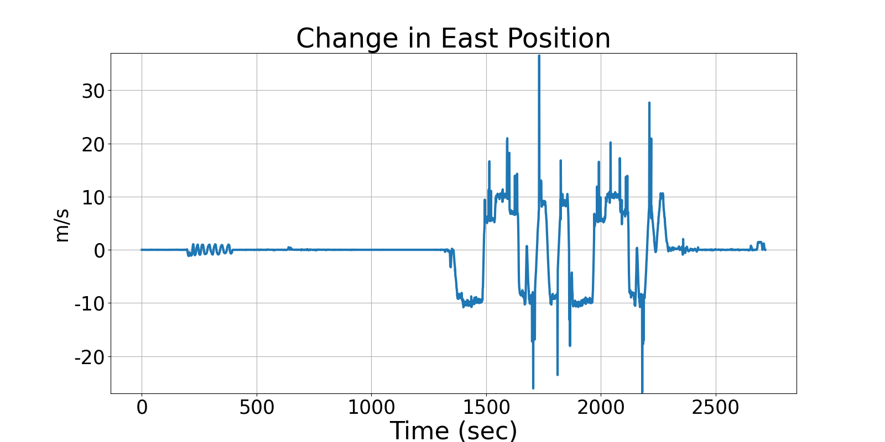
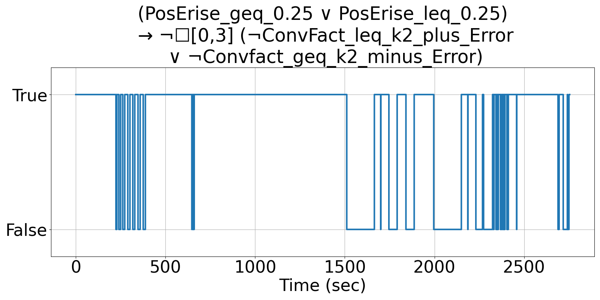

Integrating Runtime Verification into an
Automated UAS Traffic Management System
Matthew Cauwels, Abigail Hammer, Benjamin Hertz, Phillip H. Jones, Kristin Y. Rozier
This webpage contains supplementary specifications for "Integrating Runtime Verification into an
Automated UAS Traffic Management System" by M. Cauwels, A. Hammer, B. Hertz, P. H. Jones, and K. Y. Rozier
PM_UAS_4
Specification Description
The relationship between the Long and the PosE measurements shall be directly proportional by factor k2. The error between these two should be less than ERROR_LONG_POSE. If it is outside these error bounds, then allow 3 timesteps for recovery
Signals Required
Long, PosE
Boolean Conversion of Signals to Atomic Inputs
PosErise = POSE - PREV_POSE
LongRise = LONG - PREV_LONG
ConvFact = PosErise/LongRise
PosErise_geq_0.25: PosErise ≥ 0.25
PosErise_leq_0.25: PosErise ≤ -0.25
ConvFact_leq_k2_plus_Error: ConvFact ≤ k2 + ERROR_LONG_POSE
ConvFact_geq_k2_minus_Error: ConvFact ≥ k2 - ERROR_LONG_POSEMLTL Specification
(PosErise_geq_0.25 ∨ PosErise_leq_0.25) → ¬☐[0,3] (¬ConvFact_leq_k2_plus_Error ∨ ¬ConvFact_geq_k2_minus_Error)
Fault Explanation
The relationship between the Longitude and Position East is outside the error bounds and are too widely varied.
Additional Notes
k2 would have to be predefined and is mission dependent based on initial altitude. ERROR_LONG_POSE could be given a value like 25% of k2
Figures

